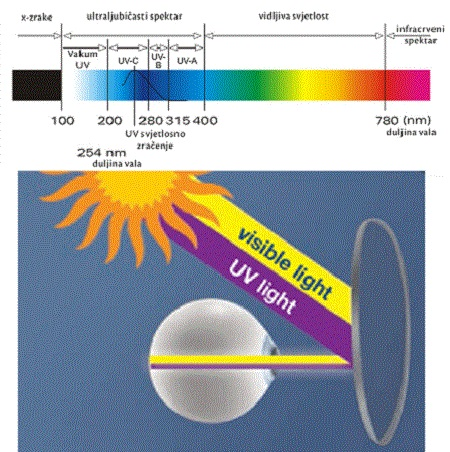

Svet o oku i očnim pomagalima

Optičke karakteristike
- Indeks prelamanja neke optičke sredine (materijal) se definiše kao odnos brzine svetlosti u vakuumu i brzine svetlosti u toj optičkoj sredini. Što je veći indeks prelamanja (u daljnjem tekstu samo indeks) materijala, to će biti veći i ugao prelamanja, tj. skretanja zraka sa prvobitnog pravca na graničnoj površini, vazduh - sočivo, pa će tako i optičko delovanje sočiva sa većim indeksom prelamanja biti veće. Posledica ovoga je da će sočivo izrađeno od materijala sa većim indeksom prelamanja biti tanje od sočiva sa istom dioptrijom koje je izrađeno od materijala sa nižim indeksom.
- Abbe-ov broj ili indeks disperzije je veličina koja definiše odnos između disperzije i indeksa materijala preko kog se svetlost prelama. Što je veći Abbe-ov broj to je svetlost homogenija i slika je oštrija. Za dobru oštrinu slike minimalna vrednost Abbe-ovog broja iznosi 40, za oftalmološka sočiva.
- Refleksija-Kada zrak svetlost pada na graničnu površinu dve optičke sredine sa različitim indeksima prelamanja, u našem slučaju kada iz vazduha pada na spoljnu površinu sočiva u naočare, deo svetlosnog snopa prolazi u novu sredinu (sočivo), a deo se odbija od površine sočiva i vraća nazad u vazduh.
- Dioptriska jačina sočivasočiva se definiše kao veličina obrnuto proporcijalna daljini fokusa(žižinoj daljini). To je ustvari dioptrija. Npr. +4.00 ili -3.00.
-
UV zračenje-Vidljiva svetlost je spektar elektromagnetnog zračenja Sunca sa talasnim dužinama između 380 i 780 nm.
Zračenja sa talasnim dužinama ispod 380nm spadaju u oblast UV zračenja i dele se na tri spektra:1. UVC (ispod 290 nm), koga apsorbuje ozonski omotač.
2. UVB(od 290 do 320 nm), koji prolazi kroz ozonski omotač i najvećim delom ga apsorbuje rožnjača oka. Izaziva razna oboljenja rožnjače (rak).
3. UVA (od 320 do 380 nm) je najopasnje za ljudsko oko jer prolazi kroz rožnjaču i može da dovede do oštećenja očnog sočiva i mrežnjače.
Važno je napomenuti da pored prirodnog izvora (Sunca) postoje i brojni veštački izvori UV zračenja kojima smo okruženi. Svako oftalmološko sočivo pruža oku zaštitu u određenoj meri. Različiti indexi sočiva imaju različiti procenat UV zaštite. Najbolja UV zaštita oka može da se postigne nanošenjem specijalnog sloja na sočiva. Svako dodatno tretiranje sočiva sa određenim dodatnim slojevima sočivo dodatno dobija na UV zaštiti
Stepen zatamnjenosti naočara nije merilo zaštite od UV zraka. Ukoliko su naočare tamne, a ne filtriraju u dovoljnoj meri UV zrake, one mogu čak i naškoditi oku, zato što se zbog zatamnjenosti naočara zenica proširi i u oko uđe više nefiltrirane svetlosti nego što bi ušlo kada takve naočare ne biste nosili. Novim dostignućima i novom tehnologijom je izračunato da UV zračenje može da dođe i sa unutrašnje strane sočiva, cak u 90% slučajeva ljudi koji nose naočare nisu toga ni svesni. Što dovodi do nanošenja UV zaštite i sa unutrašnje strane sočiva.